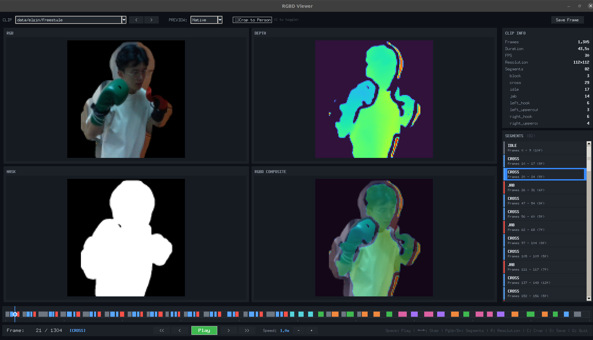
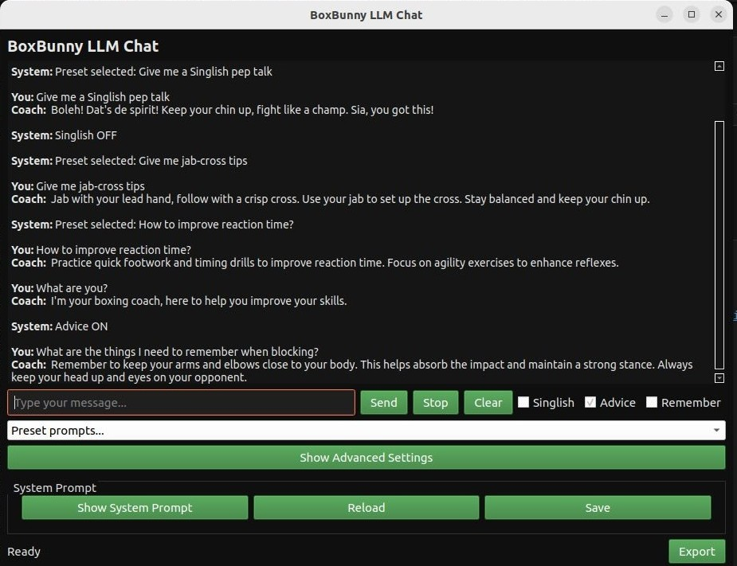

Current
NUS Immersive Reality Lab + BoxBunny Capstone — eldercare AI companions and an intelligent boxing robot
Robotics Software & Embodied AI
Building software-first robotics — ROS architecture, perception models, Reinforcement Learning, and human–robot interaction.

Most Relevant Work
Semi-autonomous boxing coach — building a robust RGB-D action recognition stack for real-time punch prediction.


Built a custom annotation GUI for synchronized RGB-D clips, then generated cleaner labels for training.


Training with segmented inputs and scaling data collection for a causal transformer to handle real-time, non-linear punch dynamics (fast/slow punches).


Parallel track: fine-tuning an LLM to turn recognition outputs into concise, personalized coaching cues.
Camera-to-SLAM localization pipeline for socially aware robot gaze at Expo scale.

Porting a dexterous manipulation RL pipeline from Adroit to Inspire hand in simulation.
Foundational Track
NUS Innovation & Design Programme — my entry point into robotics. Where I first learned to design, build, and program physical systems from scratch.

Three chassis iterations evolved from a first prototype into a full balancing system. The key novelty was 3-axis active gimbal stabilization, which kept the robot’s first-person camera view steady so pilots could track opponents and aim more reliably during competition.


Experience using FEA workflows to evaluate chassis stiffness and stress distribution before fabrication, helping de-risk mechanical choices early in the design cycle.

Built and tested control models in MATLAB/Simulink, then iterated LQR tuning in simulation before applying gains to hardware.
Controller tuning progression from first prototype to final standing behavior.
Visual Communication


Professional Journey
ROS2 · SLAM · Perception · Mobile Robotics · Embedded (STM32)
YOLO · CV · Neural Nets · Action Recognition · RL · LLM
MATLAB/Simulink · Simulation · COMSOL · MuJoCo · SolidWorks · PID/LQR
Python · C++ · C · JavaScript · Docker · Git · Linux
Other Work
Let's Connect
Email: yogeeswaran@u.nus.edu · LinkedIn: yogee-s · GitHub: Yogee-s